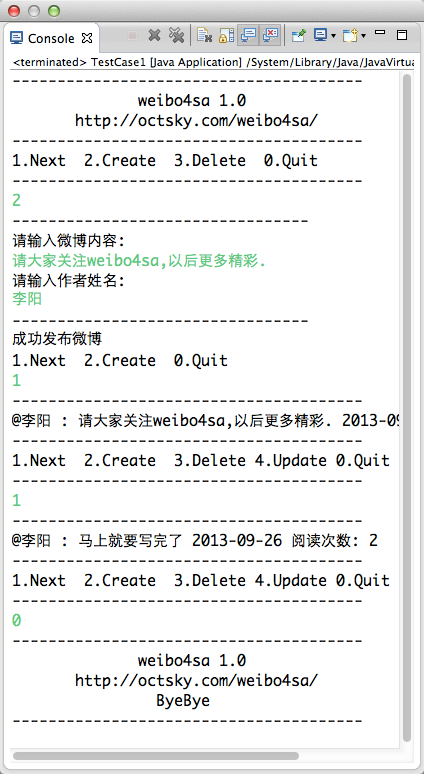

Weibo4sa
Homework for Software Architecture Course HIT
李阳 张毅 刘利万
View project on
GitHub
Step 1 :Using Observer Pattern
Features:
Support Weibo CURD
Counts every readers
Log for operations
A Quick look:
